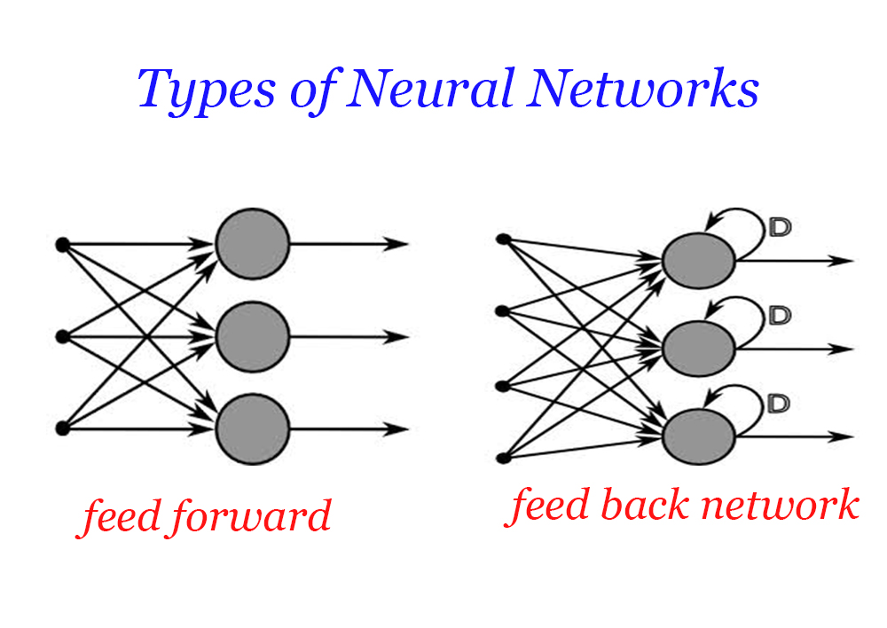

ARTIFICIAL NEURAL NETWORKS
Why do we need
Artificial Neural Networks ??
Mcculloch-Pitts Neuron : 1943


Learning process of ANN
| Quantity | Price |
| 1Kg | Rs.21 |
| 2Kg | Rs.42 |
| 3Kg | Rs.63 |
| 4Kg | Rs.84 |
| 5Kg | ?? |
Types of learning
- - Supervised
- - Re-enforced
- - Unsupervised
Applications
- Pattern Recognition
- Face Recognition
- NLP
- Smart girds
- Share Market etc..
-Failure of ANN in 1990's
-Comeback in 21st century
Current trends :
Notable personalities
Use a spacebar or arrow keys to navigate